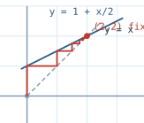

FIXED POINT

text and redraw spec
FIXED POINT x = f(x) example: f(x) = 1 + x/2 fixed point at x = 2 A fixed point is a value that a function returns unchanged. For the example map f(x) = 1 + x/2, the fixed point is the value x where x equals 1 + x/2, and solving that equation gives x = 2. The drawing that finds it is called a cobweb, and it is built from two lines and a staircase walked between them. The first line is the diagonal y = x, on which every point has equal coordinates. The second line is the map y = f(x) itself. The fixed point is the single place where the two lines cross, because that is where f(x) and x are the same number. ================================================================ PROCESS - the cobweb staircase ================================================================ The walk starts at a chosen value on the x-axis and then repeats one pair of moves. The first move goes straight up from the current value until it meets the map line, which reads off f of that value. The second move goes straight across until it meets the diagonal, which carries that output back down to the axis as the next input. Repeating the pair draws a staircase that climbs toward the crossing point. y 2| _____* (2,2) the two lines cross here | ______/ /| | _____/ / | diagonal y = x | ____ *===* ____/ | 1| ____/ | | ____/ | map y = 1 + x/2 | / *====* *=/ | | / | | | | 0|*=======* | | | +--------+----+---+--------------+----- x 0 1 1.5 2 3 staircase corners, in order (each pair is one up-move then one across-move): (0, 0) -> (0, 1) up to the map: f(0) = 1 (0, 1) -> (1, 1) across to the diagonal: next input is 1 (1, 1) -> (1, 1.5) up to the map: f(1) = 1.5 (1, 1.5) -> (1.5, 1.5) across to the diagonal: next input is 1.5 (1.5, 1.5) -> (1.5, 1.75) (1.75, 1.75) -> (1.875, 1.875) ... Each step lands closer to (2,2) than the one before, and the gap is cut roughly in half every time because the map line has slope one half. The inputs run 0, 1, 1.5, 1.75, 1.875, and they approach 2 without ever overshooting it. ================================================================ ARRIVAL - the crossing point ================================================================ The staircase settles on the point (2,2), which is the fixed point. At that point the up-move and the across-move have nothing left to travel, because f(2) is 2 and the input equals the output. A map line shallower than the diagonal, as here, pulls the staircase inward to the crossing, which is what makes this fixed point stable. To redraw the whole figure by hand, plot the diagonal and the map line, pick any starting value on the axis, and alternate up-to-the-map and across-to-the-diagonal until the steps close on the crossing.